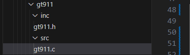
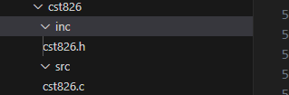

修改已有 CTP 驱动
9 Apr 2025
Read time: 7 minute(s)
本节以将 GT911 驱动修改为 CST826 驱动为例，描述通过修改已有 CTP 驱动进行 CTP 移植的详细流程。
- 修改编译路径
打开 bsp/peripheral/touch/SConscript 文件，并将 GT911 文件编译路径描述修改为 CST826 文件编译路径。
示例如下：-
修改前，GT911 文件编译路径：
if GetDepend('AIC_TOUCH_PANEL_GT911'): CPPPATH.append(cwd + '/gt911/inc') src += Glob('gt911/src/*.c')
-
修改后，CST826 文件编译路径：
if GetDepend('AIC_TOUCH_PANEL_CST826'): CPPPATH.append(cwd + '/cst826/inc') src += Glob('cst826/src/*.c')
-
- 修改 menuconfig 设备配置打开 bsp/peripheral/touch/Kconfig 文件，将 GT911 的设备和设备名分别修改为 CST826 的设备和设备名：
-
修改前：
choice prompt "Select CTP device" default AIC_TOUCH_PANEL_GT911 depends on AIC_USING_CTP config AIC_TOUCH_PANEL_GT911 //设备 bool "GT911" config AIC_TOUCH_PANEL_NAME string default "gt911" if AIC_TOUCH_PANEL_GT911 //设备名 -
修改后：
choice prompt "Select CTP device" default AIC_TOUCH_PANEL_GT911 depends on AIC_USING_CTP config AIC_TOUCH_PANEL_CST826 //设备 bool "CST826" config AIC_TOUCH_PANEL_NAME string default "cst826" if AIC_TOUCH_PANEL_CST826 //设备名
-
- 修改文件名打开 bsp/peripheral/touch 文件目录，将 gt911 文件夹名称及其源文件名称修改为cst826：
- 修改前：
- 修改后：
- 修改前：
-
修改源代码中的 gt911.c 文件
源代码修改包含但不限于下列内容：注： 关于如何获取下列信息，可查看获取和配置 IC 关键信息。- 更改设备名称：将所有与 GT911 相关的名称改为 CST826。
- 更改 I2C 地址：根据 CST826 的数据手册，更改 I2C 地址。
- 更改寄存器配置：根据 CST826 的数据手册，更改初始化和读取数据的寄存器配置。
- 更改 GPIO 引脚配置：确保 GPIO 引脚配置正确。
- 更新头文件和宏定义：确保所有相关头文件和宏定义都正确。
修改后的代码示例如下：#include <rtthread.h> #include "touch.h" #include <rthw.h> #include <rtdevice.h> #define CST826_SALVE_ADDR 0x5D // 根据 CST82 数据手册设置正确的 I2C 地址 #define CST826_WORK_MODE 0x00 #define CST826_POINT_NUM 0x02 #define CST826_X_COORD_H 0x03 #define CST826_Y_COORD_H 0x07 #define CST826_WEIGHT 0x0B #define CST826_MISC 0x0C #define CST826_GESTURE 0x0D #define CST826_X_COORD_L 0x0E #define CST826_Y_COORD_L 0x0F #define CST826_POINT_INFO 0x10 struct cst826_info { int point_num; int x[5]; int y[5]; int weight[5]; }; static struct cst826_info info; static struct rt_i2c_bus_device *cst826_bus; static int cst826_read_point(struct rt_i2c_bus_device *bus, struct cst826_info *info) { int ret = -1; unsigned char buf[64]; unsigned char read_buf[4]; int i; buf[0] = CST826_POINT_INFO; if (rt_i2c_master_send(bus, CST826_SALVE_ADDR, RT_I2C_WRITE, buf, 1) != 1) { LOG_E("send config failed"); return -RT_ERROR; } if (rt_i2c_master_recv(bus, CST826_SALVE_ADDR, RT_I2C_READ, buf, 5) != 5) { LOG_E("read point info failed"); return -RT_ERROR; } if (buf[0] & 0x80) { LOG_E("no touch"); return -RT_EOK; } info->point_num = buf[0] & 0x0F; for (i = 0; i < info->point_num; i++) { buf[0] = CST826_X_COORD_H + 5 * i; if (rt_i2c_master_send(bus, CST826_SALVE_ADDR, RT_I2C_WRITE, buf, 1) != 1) { LOG_E("send config failed"); return -RT_ERROR; } if (rt_i2c_master_recv(bus, CST826_SALVE_ADDR, RT_I2C_READ, read_buf, 4) != 4) { LOG_E("read point coord failed"); return -RT_ERROR; } info->x[i] = (read_buf[0] << 8) | read_buf[1]; info->y[i] = (read_buf[2] << 8) | read_buf[3]; info->weight[i] = 1; // Placeholder for weight, as CST826 may not support it } return RT_EOK; } static void cst826_touch_device_register(struct rt_touch_device *touch_device, const char *name) { if (rt_hw_touch_register(touch_device, name, RT_DEVICE_FLAG_INT_RX, RT_NULL) != RT_EOK) { LOG_E("touch device cst826 register failed !!!"); } else { LOG_I("touch device cst826 register success"); } } static int cst826_gpio_cfg() { unsigned int g, p; long pin; pin = drv_pin_get(AIC_TOUCH_PANEL_RST_PIN); g = GPIO_GROUP(pin); p = GPIO_GROUP_PIN(pin); hal_gpio_direction_input(g, p); pin = drv_pin_get(AIC_TOUCH_PANEL_INT_PIN); g = GPIO_GROUP(pin); p = GPIO_GROUP_PIN(pin); hal_gpio_direction_input(g, p); hal_gpio_set_irq_mode(g, p, 0); return 0; } static int cst826_hw_init(struct rt_touch_config *cfg) { struct rt_touch_device *touch_device; touch_device = (struct rt_touch_device *)rt_malloc(sizeof(struct rt_touch_device)); if (touch_device == RT_NULL) { LOG_E("touch device malloc fail"); return -RT_ENOMEM; } rt_memset((void *)touch_device, 0x00, sizeof(struct rt_touch_device)); touch_device->info = cst826_info; // 如果不需要手动获取信息，可以在这里赋值手动填写的信息 touch_device->ops = &cst826_touch_ops; cst826_touch_device_register(touch_device, AIC_TOUCH_PANEL_NAME); return RT_EOK; } static int cst826_port(void) { struct rt_touch_config cfg; rt_uint8_t rst_pin; cst826_gpio_cfg(); rst_pin = drv_pin_get(AIC_TOUCH_PANEL_RST_PIN); cfg.dev_name = AIC_TOUCH_PANEL_I2C_CHAN; cfg.irq_pin.pin = drv_pin_get(AIC_TOUCH_PANEL_INT_PIN); cfg.irq_pin.mode = PIN_MODE_INPUT; cfg.user_data = &rst_pin; #ifdef AIC_PM_DEMO rt_pm_set_pin_wakeup_source(cfg.irq_pin.pin); #endif cst826_hw_init(&cfg); return 0; } INIT_DEVICE_EXPORT(cst826_port);
提示：- 寄存器配置：根据 CST826 的数据手册确认每个寄存器的地址和功能，并相应地调整代码中的寄存器配置。
- 触摸点数：如果 CST826 支持多点触控，确保
info->point_num和info->x、info->y、info->weight数组的大小足够大以存储所有可能的触摸点。 - 权重（Weight）：如果 CST826
不支持触摸点的权重，可以将
info->weight设置为固定值或忽略该字段。
-
修改源代码中的 .h 文件
根据 CST826 规格书，确保所有相关的宏定义和寄存器地址正确无误。表 1. .h 文件修改示例说明 功能
GT911
CST826
参数
配置
参数
配置
寄存器
设置 I2C 地址
GT911_ADDRESS_HIGH
0x5D
CST826_SALVE_ADDR
0x15
GT911_ADDRESS_LOW
0x14
-
-
配置和控制触摸控制器
GT911_COMMAND_REG
0x8040
CST826_WORK_MODE
0x00
GT911_CONFIG_REG
0x8047
CST826_PROX_STATE
0x01
GT911_MOD_SWT_REG
0x804D
CST826_TOUCH_NUM
0x02
读取触摸点的信息
T911_POINT1_REG 到 GT911_POINT5_REG
分别为从 0x814F 到 0x816F 的值
CST826_TOUCH1_XH 到 CST826_TOUCH1_AREA
分别为从 0x02 到 0x08 的值
宏定义
最大支持的触摸点数
GT911_MAX_TOUCH
5
CST826_MAX_TOUCH
2
每个触摸点的信息长度
GT911_POINT_INFO_NUM
8
CST826_POINT_LEN
6
-
GT911 寄存器地址和功能修改前的代码示例如下：
#ifndef __GT911_H__ #define __GT911_H__ #include "drivers/touch.h" #include <aic_hal_gpio.h> #include <aic_drv_gpio.h> #define GT911_ADDR_LEN 2 #define GT911_REGITER_LEN 2 #define GT911_MAX_TOUCH 5 #define GT911_POINT_INFO_NUM 8 #define GT911_ADDRESS_HIGH 0x5D #define GT911_ADDRESS_LOW 0x14 #define GT911_COMMAND_REG 0x8040 #define GT911_CONFIG_REG 0x8047 #define GT911_MOD_SWT_REG 0x804D #define GT911_PRODUCT_ID 0x8140 #define GT911_VENDOR_ID 0x814A #define GT911_READ_STATUS 0x814E #define GT911_POINT1_REG 0x814F #define GT911_POINT2_REG 0x8157 #define GT911_POINT3_REG 0x815F #define GT911_POINT4_REG 0x8167 #define GT911_POINT5_REG 0x816F #define GT911_CHECK_SUM 0x80FF #endif /* gt911.h */
-
CST826 寄存器地址和功能修改后的代码示例：
#ifndef __CST826_H__ #define __CST826_H__ #include <aic_hal_gpio.h> #include <aic_drv_gpio.h> #include "drivers/touch.h" #define CST826_MAX_TOUCH 2 #define CST826_POINT_LEN 6 #define CST826_SALVE_ADDR 0x15 /* cst826 reg */ #define CST826_WORK_MODE 0x00 #define CST826_PROX_STATE 0x01 #define CST826_TOUCH_NUM 0x02 #define CST826_TOUCH1_XH 0x03 #define CST826_TOUCH1_XL 0x04 #define CST826_TOUCH1_YH 0x05 #define CST826_TOUCH1_YL 0x06 #define CST826_TOUCH1_PRES 0x07 #define CST826_TOUCH1_AREA 0x08 #define CST826_SLEEP_MODE 0xA5 #define CST826_FW_VERSION1 0xA6 #define CST826_FW_VERSION2 0xA7 #define CST826_MODULE_ID 0xA8 #define CST826_PROJECT_NAME 0xA9 #define CST826_CHIP_TYPE1 0xAA #define CST826_CHIP_TYPE2 0xAB #define CST826_CHECKSUM1 0xAC #define CST826_CHECKSUM2 0xAD #define CST826_PROX_MODE 0xB0 #define CST826_GES_MODE 0xD0 #define CST826_GESTURE_ID 0xD3 #define AIC_TOUCH_PANEL_CST826_X_RANGE 480 #define AIC_TOUCH_PANEL_CST826_Y_RANGE 272 #endif
-